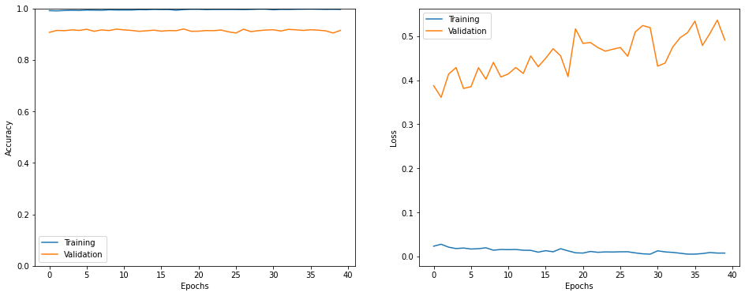

Tweet Emotion Recognition
The Project aims to understand and recognise the emotion and feeling embedded in the texts. The dataset used is 'Emotion-Dataset', it is a collection of tweets having different lebels of emotions. This is a dataset that can be used for emotion classification. For this classification problem the model Long short-term memory artificial neural network mainly to utilize feedback connections.

Image Classification using Neural Networks(ANNs and CNNs)
The advancement of deep learning and artificial intelligence has opened up new possibilities for picture classification technologies. The issue that arises when a user uploads an image and the computer subsequently sends out a classification and description of the picture's content is known as the "image classification problem." The classic picture classification approach of feature description and detection has several flaws, including poor accuracy and lengthy time-consuming issues. Pytorch/Python is one of the more efficient deep learning frameworks currently available. Convolutional neural network models can be quickly and readily built using the Pytorch/Tensorflow framework, and they can be trained on enormous amounts of data.
[Project Report] [Google Colab Notebook]
-1.png)
Object Tracking System for Surveillance and Related Applications using OpenCV-Python
Computer Vision has gained a tremendous influence on how the world is adapting to Artificial Intelligence for the past few years. Due to object detection’s close relationship with video analysis and image understanding, it has attracted much research attention in recent years. Object Tracking System is used to track the motion trajectory of an object in a video. The aim of this project is to explore different methods for helping computers to track objects in videos and also in real-time circumstances and also investigate solutions to those methods offered by the open-sourced computer vision library viz. OpenCV. The result of this project is a Windows-based Python application that is able to track objects in ROI (Region of Interest).